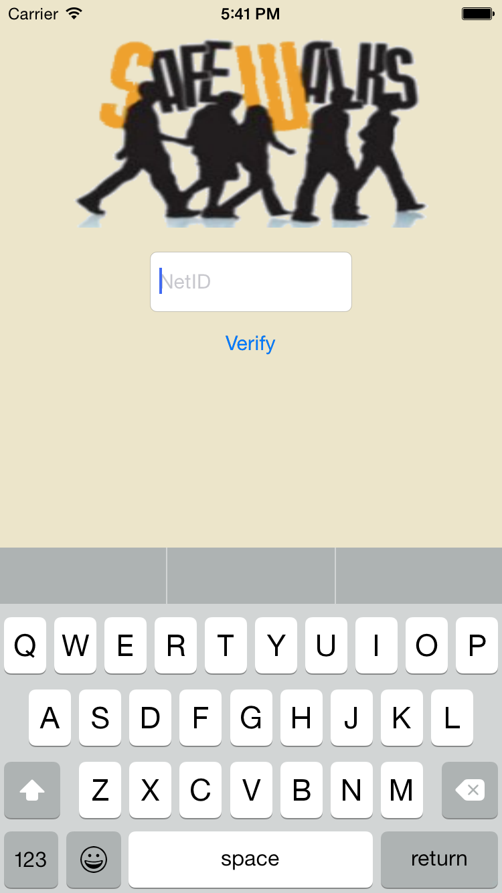
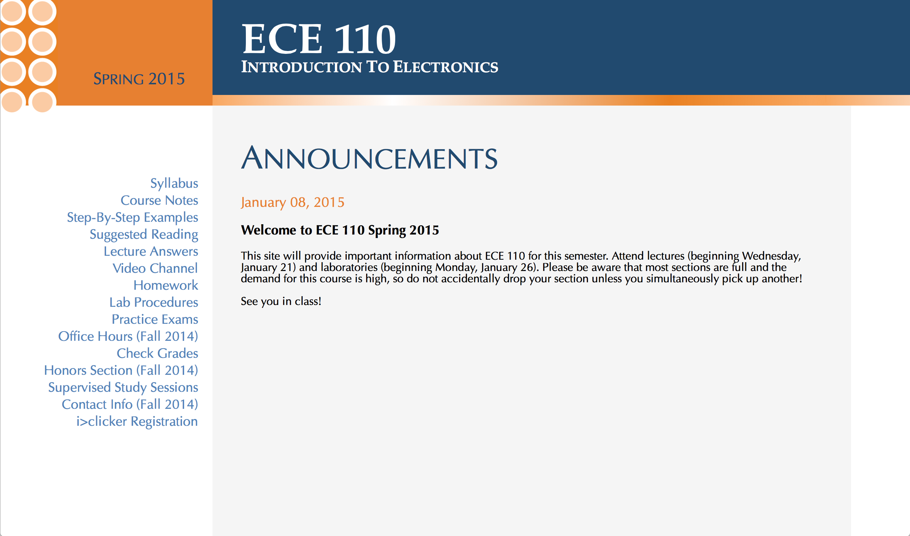

-
I am a self taught programmer and software developer. I was born in Miami FL, and have lived there my entire life. Currently a sophomore at the University of Illinois at Urbana Champaign (UIUC), I am studying computer engineering with goals of entering the software development industry after graduation.
I started programming because I always thought it was really cool and interesting and fell in love with it since then. I strive to better myself everyday through classes as well as personal projects
I am currently searching for an internship over the summer of 2015 for software development in an environment where I can learn and apply my skills in programming.
-
Projects and Work
Tekst (Work in Progress)
Description: A work in progress website that will provide college students an easy way to buy and trade textbooks with peers.
Skills: Ruby on Rails
SafeWalks iOS App
Description: I wrote an app for the SafeWalks program at UIUC, a service where students can request someone to walk them back to their home.
Skills: Objective C, iOS Liraries
- Wrote the entire user interface for iOS
- Used Location Data on the phone to create requests that were sent to FireBase and processed
ECE 110 Course Website
Description: A summer long project where I worked as a web programmer for the UIUC ECE department. The goal was to rewrite an essential course website for first year students. This project was significant because of the wide variety of features that were intended for the website
Skills: HTML, CSS, PHP, Javascript
- Designed the system that transcribed plain text course notes into webpages by request, this increased efficiency ten fold because previously the note conversion was done by hand
- Created a system for parsing and generating interactive examples on the fly
- Coded everything on the frontend to the backend from scratch
-
Code Samples
AI for a snake game, written for class. Written in C
Image convolution program, applies a variety of filters such as blurs, grayscale, pixelation, sharpening, etc. Written in C
Audio Processing program, can either clip and loop a small segment of a wav file or apply a lo pass filter. Written in C
Javascript code for parsing an XML file for specific tags specified in the script. This was written for the ECE department of UIUC for their ECE 110 website. Converts properly tagged xml into an interactive example